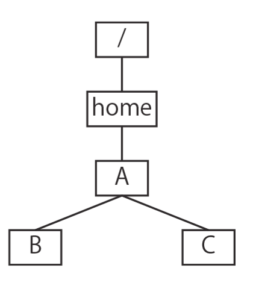

ネットワークモデル・階層モデル（木構造）とファイルパス
複数の地点・オブジェクトのつながりを、対象を表すノード（点）とつながりを表す エッジ（線）で表現するデータモデルをネットワークモデルという。 ノードをエッジで結んでできるデータ全体をグラフという。電車の路線図（駅＝ノード、 路線＝エッジ）や、WEBサイト間のリンク関係（サイト＝ノード、リンク＝エッジ。リンクは一方向にしか たどれないので有向エッジとみなせる）などが例として挙げられる。
根から枝分かれしていく構造（木構造）でデータの分類を表現するデータモデルを 階層モデルという。生物の分類（界→門→綱→…）や住所（都道府県→市区町村→…）、 URLのドメイン名（.jp や .ac のような、右から左へ辿ると階層が細かくなっていく構造）などが例である。
フォルダ（ディレクトリ）の中にフォルダが入れ子になっている構造も、階層モデルの一種として表せる。
あるフォルダの位置を指定する方法（パス）には2種類ある。最上位のディレクトリ
（rootディレクトリ、記号は /）から順にたどって指定する
絶対パスと、現在のディレクトリ（作業中の位置）を起点にして指定する
相対パスである。相対パスでは、1つ上位のフォルダを表す記号として ..
（ピリオド2つ）を用いる。
ターミナルのコマンド操作（pwd, ls, cd, mv）を
1行ずつ追い、その時点でのフォルダ階層を頭の中（または紙の上）で組み立てながら解くタイプの問題。
焦らず1コマンドずつ状態を更新していくのがコツで、特に mv でフォルダそのものが
別の場所に移動した後は、それ以前の階層図をそのまま使い回さず必ず書き直すこと。
以下は，フォルダ（ディレクトリ）関連のコマンドの実行結果を示したものである（左上から右下へと
続けて実行している）．$ はコマンドプロンプト，↵ はリターンキーの
入力を意味している．ここで使用されているコマンドは，次の表のとおりである．なお，「..」
（ピリオド2つ）は，階層構造で1つ上位のフォルダを示す記号である．
| コマンド | 意味 |
|---|---|
pwd↵ | 現在のフォルダの位置を表示する |
ls↵ | 現在のフォルダ内の一覧を表示する |
ls x↵ | フォルダxの内の一覧を表示する |
cd x↵ | 現在のフォルダをフォルダxに変更する |
mv x y↵ | フォルダxをフォルダyの内に移動する |
【左のボックス】
$ pwd↵
/home/A
$ ls↵
B C …⓪
$ cd B↵
$ pwd↵
/home/A/B
$ ls↵
D E
$ cd D↵
$ pwd↵
1
$ ls↵
$ cd ..↵
$ pwd↵
/home/A/B
$ ls E↵
$ cd ../C↵ 右上に続く
【中央のボックス（左のボックスの続き）】
$ pwd↵
2
$ ls↵
F G
$ ls F↵
H I
$ ls F/H↵
$ ls F/I↵
$ ls G↵
J
$ ls G/J↵ …①
$ mv F ..↵
$ cd ..↵
$ ls↵
B C F …②
$ ls F↵
H I
$ mv B C/G/J↵ 右上に続く
【右のボックス（中央のボックスの続き）】
$ ls↵ 3 …③ $ cd C↵ $ ls↵ 4 $ cd 4↵ $ pwd↵ 5 $ ls↵ J $ cd J↵ $ ls↵ 6 $ cd 6↵ $ ls↵ 7 $ pwd↵ 8

⓪のコマンドを実行した時点で判明しているフォルダの階層構造の例
(1) ⓪のコマンドを実行した時点で判明しているフォルダの階層構造は，上図のように描くことができる． ①，②，③のコマンドを実行した時点で判明しているフォルダの階層構造全体を上図にならって示せ．
(2) 空欄 1 〜 8 を埋めよ．
まず全体の流れを1コマンドずつ追う。出発点は /home/A で、直下に B,
C がある（⓪の図）。
①まで（左ボックス〜中央ボックス前半）：
cd B で /home/A/B に移動すると D, E がある。
cd D すると pwd は /home/A/B/D（空欄1）となり、
ls は何も表示しない（D は空）。cd .. で /home/A/B に
戻り、ls E も何も表示しない（E も空）。続けて cd ../C は、
/home/A/B から見て「1つ上（/home/A）の中の C」を意味するので
/home/A/C に移動する。中央ボックス冒頭の pwd はこの
/home/A/C（空欄2）を表示する。ls で F, G
を確認し、ls F で H, I（両方とも ls F/H・
ls F/I で空と判明）、ls G で J、ls G/J
で空（J はまだ空）と分かった時点が①である。①までに判明している構造は、⓪の
B（D, E を含む）に加えて、C の下に
F（H, I）と G（J）がぶら下がる形。
①時点
/
└── home
└── A
├── B
│ ├── D
│ └── E
└── C
├── F
│ ├── H
│ └── I
└── G
└── J
②まで（中央ボックス後半）： mv F .. は、現在のディレクトリ
/home/A/C から見て「1つ上（/home/A）」に F を移動する
という意味なので、F は C の下から出て A の直下に
移動する（中身の H, I はそのままついていく）。続く cd ..
で現在のディレクトリは /home/A/C から /home/A に変わり、ls
で B, C, F（空欄②の答え）が表示される。ls F
で F の中身が依然 H, I のままであることも確認できる。
この時点で C の中には G（とその下の J）だけが残っている
（F は既に出ていったため）。
②時点
/
└── home
└── A
├── B
│ ├── D
│ └── E
├── C
│ └── G
│ └── J
└── F
├── H
└── I
③まで（右ボックス前半）： mv B C/G/J は、現在のディレクトリ
/home/A から見て「C の中の G の中の J」
という多階層の相対パスを第2引数に指定しており、B（中身の D, E
ごと）を一気に /home/A/C/G/J の中へ移動する。この結果、/home/A の
直下からは B がいなくなり、右ボックス冒頭の ls は残った
C, F（空欄3）だけを表示する。これが③の状態である。
③時点
/
└── home
└── A
├── C
│ └── G
│ └── J
│ └── B
│ ├── D
│ └── E
└── F
├── H
└── I
空欄4〜8（右ボックス後半）： cd C で /home/A/C に
移動すると、C の中身はもう G だけ（F は②で既に出て
いった）なので ls の答えは G（空欄4）。cd G で移動した
後の pwd は /home/A/C/G（空欄5）。ls で J
が確認でき、cd J すると、③で B が移動してきているので ls
の答えは B（空欄6）。cd B すると、B 自身の中身は
一度も変更されていないので ls の答えは元のまま D, E
（空欄7）。最後の pwd は、これまでの移動をすべて辿った絶対パス
/home/A/C/G/J/B（空欄8）となる。
mv B C/G/J のように、mv の第2引数には「兄弟フォルダ」だけでなく
C/G/J のような複数階層にわたる相対パスを直接指定できる点は地味に見落としやすい。
これに気づかないと、③の状態で B が C の直下に来たと誤解してしまう
（正しくは C の中の G の中の J の中）。フォルダの移動は
コマンドが実行された順序どおりに、その時点の階層構造を1つずつ正確に書き換えていく以外に
追う方法がない。過去の状態の図をコピーして使い回さず、mv が出てくるたびに図全体を
描き直す（または少なくとも動いたノードだけを慎重に付け替える）のが確実である。